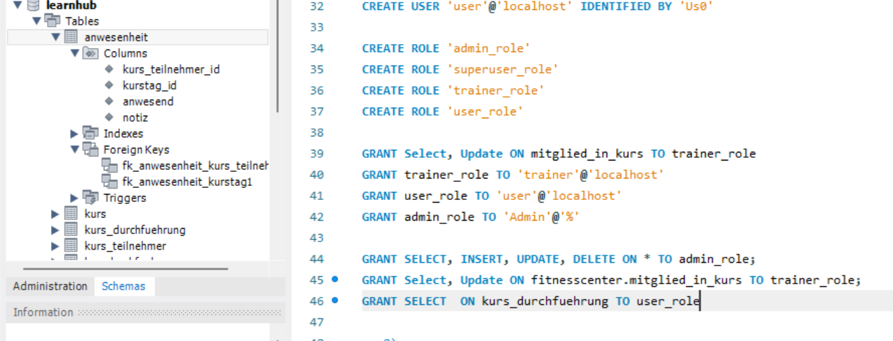
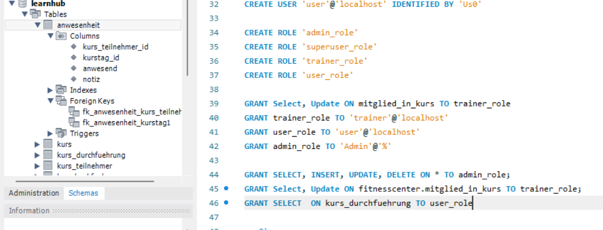

Hallo, ich bin Robin Ich bin am Ende von meinem 1. Projekt als Informatiker in Applikationsentwicklung und suche nun mein 2. Projekt. Warum ich? Ich habe die Grundlagen in Angular und Java solide erarbeitet und möchte mein können unter Beweis stellen!
🕵️Interessen
💪Meine Skills
Frontend
🏗️ HTML
Ich arbeite sehr gern an Webseiten und hab schon über ein Dutzend Projekte mit HTML umgesetzt und dabei immer einen Blick fürs Detail behalten.
🎨 CSS
Ich liebe es Webseiten mit CSS zu stylen, sei es mit geschmeidigen Übergängen oder kreativen Flex-Layouts. In mehreren Webseiten habe ich schon für ein ansprechendes Design gesorgt
📜 Javascript
Mit Javascript habe ich in meinen Projekt schon erfahrung gesammelt. Ob dynamische Menüs oder kleine Animationen, in meinem habe ich Nutzererlebnisse mit meinen Code verbessert.
Backend
☕ Java
Ich habe Java Streams genutzt um Daten aus Jsons und anderen Anwendungen zu Sortieren und Mappen, dass hab ich auch schon bei Projekten in Teams angewendet
🌀 NoteJS
Ich habe im ÜK mit NodeJS eine unvollständige Datenbank fertiggestellt und REST-APIs entwickelt. Dabei habe ich auch andere Anwendungen gebraucht um Daten gut zu Strukturieren
Sonstiges
⚡ PowerShell
Ich habe hauptsächlich mit dem Automatisierungsteil von PowerShell gearbeitet. In der Schule haben wir im Team eine Desktop-Applikation entwickelt.
💽 Datenbanken
Ich weiss wie ich Datenbanken in Angular implementieren kann. Im ÜK habe ich Datenmodelle erstellt und die Datenbank mit vielen Befehl abgefragt.
🔌 API
Ich habe API's schon in viele Meiner Projekte implementiert und weiss wie ich Endpunkte definieren kann. Ich kann eine API mit Java erstellen
🐢 Git
Ich setze Github und Gitlab fast täglich für meine Projekte. Ich habe schon mit Branches gearbeitet und weiss wie ich Pipelines fixen kann.
🏫 Schultage
🛠️ Projekte
Flaggenquiz Website mit APIFilmwebsite mit APIPflanzengiessen ErinnerungsskriptDatenbank für Kursanbieter mit Rollen

 
